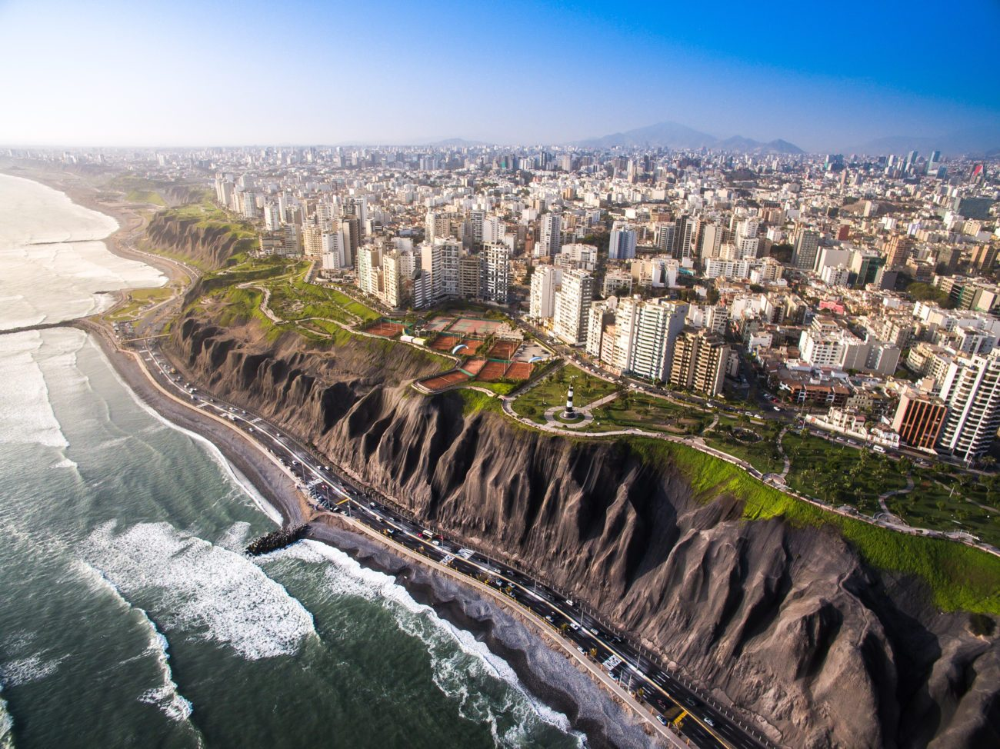

Hello classmates, this is my city!
It's called Lima, Peru's capital.

Cick to read a bit more about Lima
Here in Peru we also have one wonder of the world, it's called Machu Picchu.

Cick to read a bit more about Machu Picchu
Here are a few reasons why Machu Picchu is great.
- You feel an outworldly energy were you are there, like if your chakras are recharging.
- It's made by the Inca culture, the biggest originary culture in South America before the Spanish colonization.
- It's really safe, and the nearest city, Cuzco, is full of history.
If you come to Peru you can count on me for.
- Making you a tour in Lima.
- You can stay in my house.
- Giving you advice on which places to stay in Cuzco.
Regards
Mark